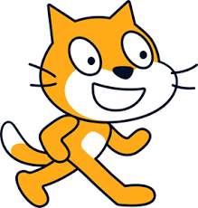

BIENVENIDOS AL FUTURO (Comprendiendo la IA) CyR 1º ESO
BIENVENIDOS AL FUTURO (IA)
Qué vamos a hacer
En esta SdA vamos a aprender los conceptos básicos de la IA construyendo modelos de aprendizaje automático sencillos con dos herramientas. Una ya la conoces (se trata de Scratch), la otra es nueva, pero es muy intuitiva y te será sencillo dominarla en poco tiempo, es ML4K Machine Learning For Kids). También podemos usar LML (Learning ML), más fácil aún. Tu profe decidirá con cual trabajáis.
|  |
Objetivos de Aprendizaje
- Comprender los fundamentos del aprendizaje automático.
Definir qué es el aprendizaje automático y cómo puede utilizarse para enseñar a las máquinas a reconocer patrones.
- Desarrollar habilidades prácticas en Machine Learning.
Utilizar la herramienta Machine Learning for Kids o Leraning ML para crear un modelo de clasificación básico (por ejemplo, clasificación de imágenes o texto).
Entender el proceso de entrenamiento de un modelo: recopilación de datos, entrenamiento, evaluación y ajuste del modelo.
- Integrar modelos de aprendizaje automático en proyectos interactivos.
Integrar el modelo creado en Machine Learning for Kids o Learning ML con un proyecto en Scratch utilizando bloques de código que permitan la interacción con el modelo.
Crear un chatbot básico que responda a entradas específicas del usuario basándose en el modelo entrenado.
- Fomentar el pensamiento crítico y la resolución de problemas.
Establecer conexiones entre la programación y los resultados del modelo de aprendizaje automático.
Desarrollar habilidades de depuración y ajuste en el proceso de creación y optimización del chatbot.
- Introducir la ética en la inteligencia artificial.
Reflexionar sobre los posibles sesgos y limitaciones que pueden existir en los modelos de aprendizaje automático.
Discutir sobre la responsabilidad al utilizar tecnologías de inteligencia artificial, especialmente en el contexto de chatbots y sus posibles usos.
- Fomentar la creatividad en la programación
Crear un chatbot interactivo con una personalidad única, usando el modelo entrenado.
Experimentar con diferentes tipos de entradas y salidas en el chatbot para hacer el proyecto más interactivo y divertido.
Arrancamos!!!
 |
Ponte las pilas que empezamos en 3, 2, 1, .... |
Obra publicada con Licencia Creative Commons Reconocimiento Compartir igual 4.0